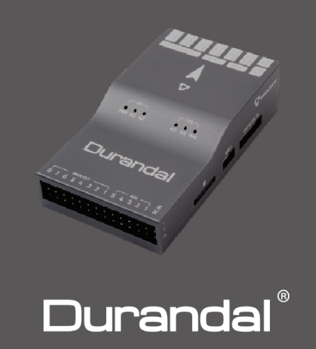
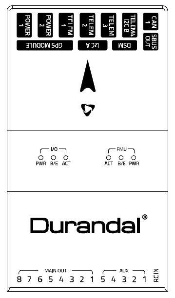
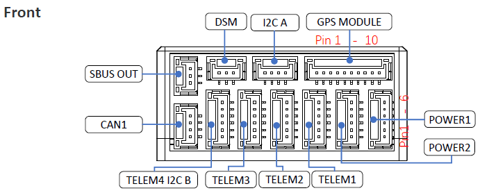
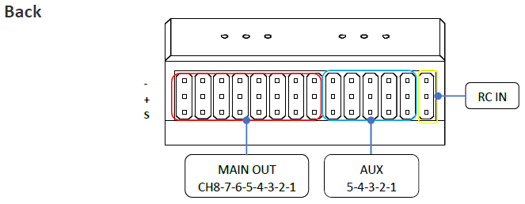
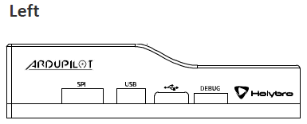
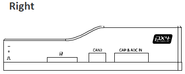

Holybro Durandal¶
{kind=link}
Durandal is the latest update to the successful family of Holybro autopilots. It was designed and developed by Holybro, optimized to run the latest ArduPilot firmware. It features the STM32H743 microprocessor, the latest advanced processor technology from STMicroelectronics®, plus sensor technology from Bosch® and InvenSense®, and a ChibiOS real-time operating system, delivering incredible performance, flexibility, and reliability for controlling any autonomous vehicle. Durandal’s microcontroller now has 2 MB of Flash memory and 1 MB of RAM.
Specifications¶
Processor
32-bit STM32H743 main processor
400Mhz / 1MB RAM / 2MB Flash
32-bit co-processor
Sensors
InvenSense ICM20689 accelerometer / gyroscope
Bosch BMI088 accelerometer / gyroscope
MS5611 barometer
IST8310 magnetometer
Power
Operating power: 4.9~5.5V (6v max input)
USB Input: 4.75~5.25V
High-power servo rail, up to 36V (servo rail does not power the autopilot)
Dual voltage and current monitor inputs
Interfaces
USB-C and JST_GH USB ports
16 PWM outputs, 8 of which can be used as GPIO pins
Dual power module inputs
S.Bus servo output
R/C inputs for CPPM and S.Bus
DSM input port
Analogue / PWM RSSI input
5x general purpose serial ports plus debug port
3x I2C ports
4x SPI buses enabled
2x CAN Bus ports
2x additional analog inputs
Safety Switch/LED
Other
Weight: 64g
Builtin IMU heater for temperature stability
Dimensions: 80mm x 45mm x 20.5mm
Operating temperature: -40 ~ 85°c（claimed）
Pinout¶
    UART Mapping¶
SERIAL0 -> USB
SERIAL1 -> UART2 (Telem1)
SERIAL2 -> UART3 (Telem2)
SERIAL3 -> UART1 (GPS)
SERIAL4 -> UART4 (GPS2, Telem4/I2C)
SERIAL5 -> UART6 (Telem3)
SERIAL6 -> UART7 (debug port)
SERIAL7 -> USB2
The Telem1, Telem2 and Telem3 ports have RTS/CTS pins, the other UARTs do not have RTS/CTS.
Connectors¶
Unless noted otherwise all connectors are JST GH
TELEM1, TELEM2, TELEM3 ports¶
| Pin | Signal | Volt |
|---|---|---|
| 1 (red) | VCC | +5V |
| 2 (blk) | TX (OUT) | +3.3V |
| 3 (blk) | RX (IN) | +3.3V |
| 4 (blk) | CTS | +3.3V |
| 5 (blk) | RTS | +3.3V |
| 6 (blk) | GND | GND |
GPS1 port¶
| Pin | Signal | Volt |
|---|---|---|
| 1 (red) | VCC | +5V |
| 2 (blk) | TX (OUT) | +3.3V |
| 3 (blk) | RX (IN) | +3.3V |
| 4 (blk) | SCL I2C1 | +3.3V |
| 5 (blk) | SDA I2C1 | +3.3V |
| 6 (blk) | Button | GND |
| 7 (blk) | button LED | GND |
| 8 (blk) | 3.3V | 3.3 |
| 9 (blk) | buzzer | GND |
| (blk) | GND | GND |
GPS2, Telem4/I2C port¶
| Pin | Signal | Volt |
|---|---|---|
| 1 (red) | VCC | +5V |
| 2 (blk) | TX (OUT) | +3.3V |
| 3 (blk) | RX (IN) | +3.3V |
| 4 (blk) | SCL I2C2 | +3.3V |
| 5 (blk) | SDA I2C2 | +3.3V |
| 6 (blk) | GND | GND |
SBUS Out port¶
The SBUS out port is a port attached to the IO processor which can be used to output all servo channels via SBUS. It is enabled by setting the BRD_SBUS_OUT parameter.
When SBUS output is disabled (by setting BRD_SBUS_OUT to 0, you can use the pin for analog RSSI input from receivers. To enable for RSSI input you need to set:
BRD_SBUS_OUT 0
RSSI_TYPE 1
RSSI_PIN 103
You cannot have both SBUS output and analog RSSI input at the same time.
| Pin | Signal | Volt |
|---|---|---|
| 1 | GND | GND |
| 2 | 5v(Vservo) | +5.0V |
| 3 | TX (OUT) | +3.3V |
DSM/SPKT port¶
The SPKT port provides a connector for Spektrum satellite receivers. It is needed to allow for software controlled binding of satellite receivers.
| Pin | Signal | Volt |
|---|---|---|
| 1 | RX (IN) | +3.3V |
| 2 | GND | GND |
| 3 | 3.3v | +3.3V |
ADC / CAPTURE¶
| Pin | Signal | Volt |
|---|---|---|
| 1 (red) | VCC | +5V |
| 2 (blk) | FMU_CAP6, AUX6, GPIO 55 | |
| 3 (blk) | FMU_CAP5, AUX7, GPIO 56 | |
| 4 (blk) | FMU_CAP4, AUX8, GPIO 57 | |
| 5 (blk) | FMU_CAP3, GPIO 60 | |
| 6 (blk) | FMU_CAP2, GPIO 59 | |
| 7 (blk) | FMU_CAP1, GPIO 58 | |
| 8 (blk) | ADC1_3V3 (ADC pin 4) | |
| 9 (blk) | ADC1_6V6 (ADC pin 18) | |
| 10 (blk) | GND | GND |
I2C¶
| Pin | Signal | Volt |
|---|---|---|
| 1 (red) | VCC | +5V |
| 2 (blk) | SCL | +3.3 (pullups) |
| 3 (blk) | SDA | +3.3 (pullups) |
| 4 (blk) | GND | GND |
CAN1&2¶
| Pin | Signal | Volt |
|---|---|---|
| 1 (red) | VCC | +5V |
| 2 (blk) | CAN_H | +12V |
| 3 (blk) | CAN_L | +12V |
| 4 (blk) | GND | GND |
POWER1&2¶
| Pin | Signal | Volt |
|---|---|---|
| 1 (red) | VCC | +5V |
| 2 (red) | VCC | +5V |
| 3 (blk) | CURRENT | up to +3.3V |
| 4 (blk) | VOLTAGE | up to +3.3V | 5 (blk) | GND | GND | 6 (blk) | GND | GND |
USB¶
| Pin | Signal | Volt |
|---|---|---|
| 1 (red) | VCC | +5V |
| 2 (blk) | D_minus | +3.3V |
| 3 (blk) | D_plus | +3.3V |
| 4 (blk) | GND | GND |
RC Input¶
RC input is configured on the RCIN pin, at one end of the servo rail, marked RCIN in the above diagram. This pin supports all RC protocols. In addition there is a dedicated Spektrum satellite port which supports software power control, allowing for binding of Spektrum satellite receivers.
PWM Output¶
The Durandal supports up to 16 PWM outputs. First first 8 outputs (labelled “MAIN”) are controlled by a dedicated STM32F100 IO controller. These 8 outputs support all PWM output formats, but not DShot.
The remaining 8 outputs (labelled AUX1 to AUX8) are the “auxiliary” outputs. These are directly attached to the STM32H743 and support all PWM protocols as well as DShot.
All 13 back-side PWM outputs have GND on the top row, 5V on the middle row and signal on the bottom row.
The 8 main PWM outputs are in 3 groups:
PWM 1 and 2 in group1
PWM 3 and 4 in group2
PWM 5, 6, 7 and 8 in group3
The 8 auxiliary PWM outputs are in 2 groups:
PWM 1, 2, 3 and 4 in group4
PWM 5 and 6 in group5
PWM 7 and 8 in group6 (no DMA, no DShot)
Channels within the same group need to use the same output rate. If any channel in a group uses DShot then all channels in the group need to use DShot.
Battery Monitoring¶
The board has two dedicated power monitor ports on 6 pin connectors. The correct battery setting parameters are dependent on the type of power brick which is connected.
Compass¶
The Durandal has one builtin IST8310 compass.
GPIOs¶
The 8 AUX PWM ports can be used as GPIOs (relays, buttons, RPM etc). To
use them you need to limit the number of these pins that is used for
PWM by setting the BRD_PWM_COUNT to a number less than 8. For example
if you set it to 6 then PWM7 and PWM8 will be available for
use as GPIOs.
Note
in firmware versions 4.2 and later, the method for setting a PWM/SERVO/MOTOR output to be a GPIO function is changed. Instead of BRD_PWM_COUNT being used, the individual SERVOx_FUNCTION parameter is merely set to “-1”. If set to “0”, it remains a PWM output, unassigned to a function, and outputs that output’s trim value when board safety is not active. If the servo function is being “mirrored” to a remote device, as in the case of a DroneCAN or KDECAN ESC, then in order to change the autopilot board’s corresponding output pin to be a GPIO, but allow the SERVOx_FUNCTION to still be assigned to the remote device, the SERVO_GPIO_MASK parameter can be used to assign the board pin to be a GPIO without affecting the SERVOx_FUNCTION assignment for the remote device.
The numbering of the GPIOs for PIN variables in ArduPilot is:
PWM1 50
PWM2 51
PWM3 52
PWM4 53
PWM5 54
PWM6 55
PWM7 56
PWM8 57
Analog inputs¶
The Durandal has 7 analog inputs
ADC Pin16 -> Battery Voltage
ADC Pin17 -> Battery Current Sensor
ADC Pin14 -> Battery2 Voltage
ADC Pin15 -> Battery2 Current Sensor
ADC Pin4 -> ADC port pin 8 (3.3V limit)
ADC Pin18 -> ADC port pin 9 (6.6V limit)
ADC Pin9 -> RSSI in
ADC Pin10 -> 5V Sense
ADC Pin11 -> 3.3V Sense
IMU Heater¶
The IMU heater in the Durandal can be controlled with the BRD_HEAT_TARG parameter, which is in degrees C.
Loading Firmware¶
The board comes pre-installed with an ArduPilot compatible bootloader, allowing the loading of *.apj firmware files with any ArduPilot compatible ground station.
Where to Buy¶
Quick Start¶
Use the Pixhawk Wiring QuickStart as a general guide.
Acknowledgments¶
Thanks to [Holybro](http://www.holybro.com) for images
[copywiki destination=”plane,copter,rover,blimp”]